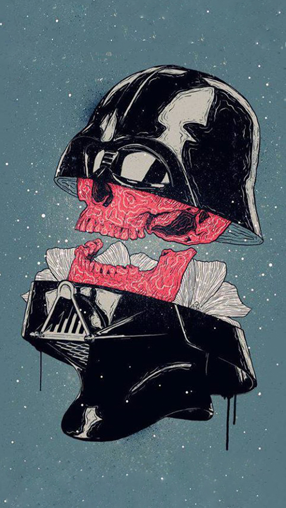

Node.js para Padawans
Node.js para Padawans

Gabriel
Gonçalves
Ribeiro
É uma plataforma construída em cima do motor JavaScript do Google Chrome (V8 Engine)
Roda em cima de Web Engine, semelhante a uma Virtual Machine, portanto, não é um servidor, mas pode
funcionar como um
NPM possui muitos modulos